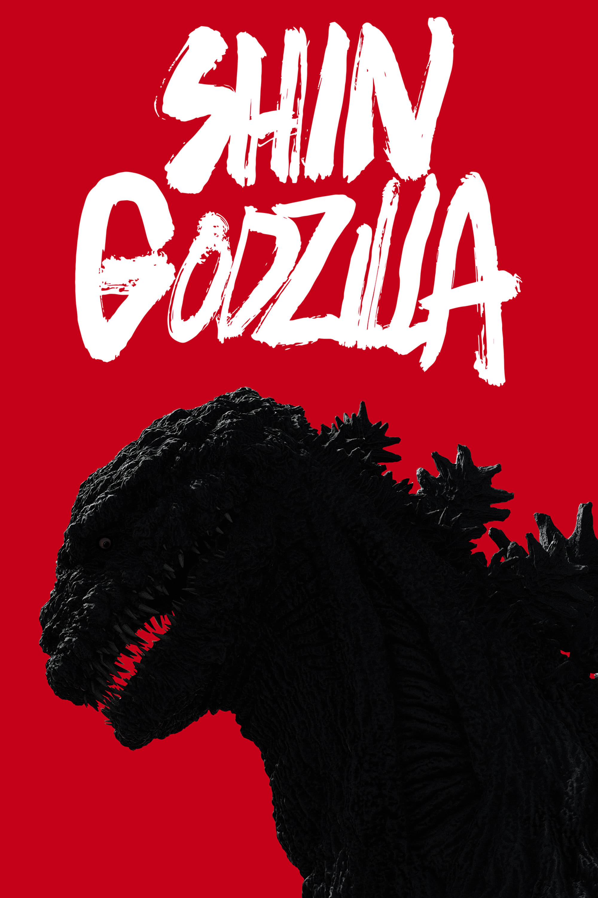
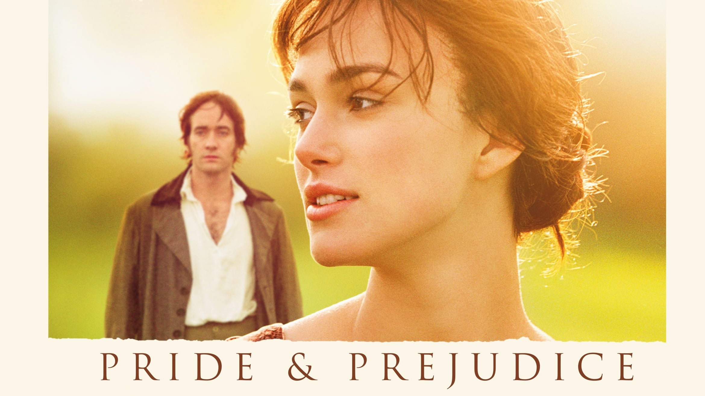
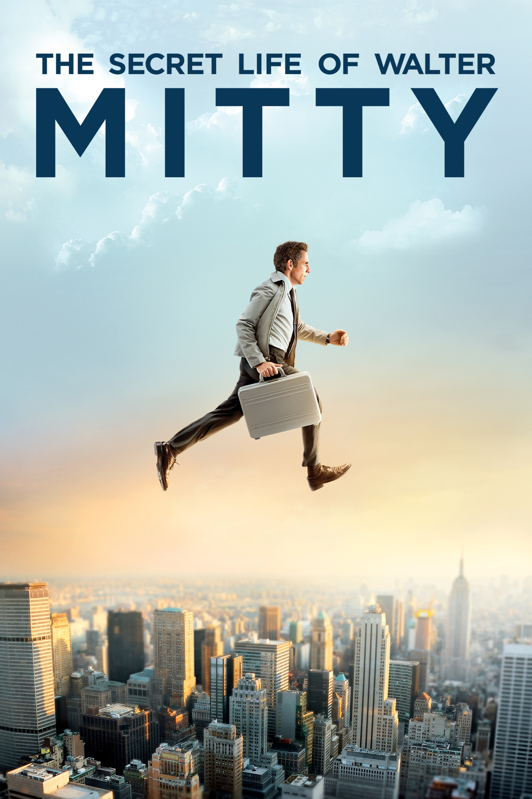

This film explores identity all the while showing that there is good in everyone. Plus the visuals & music are gorgeous!
I've loved Godzilla since I was a child & this is easily my favorite because it is both a political drama alongside an absolutely horrendous, yet beautiful (like nature), kaiju/monster film.
Love story that is intellegent, funny, & realistic with flawed individuals that learn to love by seeing past their own vices. Plus amazing soundtrack & cinematography!
A film of self discovery & courage to be more than you are & becoming who you can be. Great cast, funny, visually stunning, & amazing soundtrack!